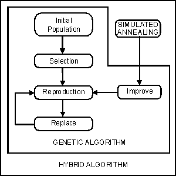
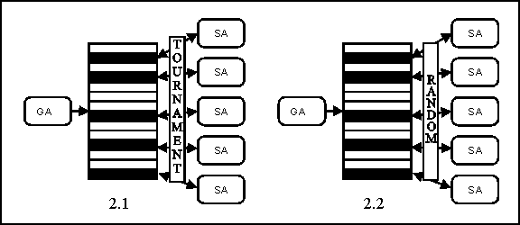

A Genetic Algorithm is an evolutionary computation technique inspired by the principles of natural selection to search a solution space. It evolves a population of individuals encoded as chromosomes by creating new generations of offsprings through an iterative process until some convergence criteria or conditions are met. The best chromosome generated is then decoded, providing the corresponding solution. The underlying reproduction process is mainly aimed at improving the fitness of individuals, a measure of profit, utility or goodness to be maximized (or minimized) while exploring the solution space. The algorithm applies stochastic operators such as selection, crossover, and mutation, on an initially random population in order to compute a new generation of individuals. The whole process is sketched in the following figure.
1 t = 0
2 initialize P(t)
3 evaluate structures in P(t)
4 while not end do
5 t = t + 1
6 select C(t) from P(t-1)
7 recombine structures in C(t) forming C'(t)
8 mutate structures in C'(t) forming C''(t)
9 evaluate structures in C''(t)
10 replace P(t) from C''(t) and/or P(t-1)
It can be seen that the algorithm comprises three major stages: selection, reproduction and replacement. During the selection stage, a temporary population is created in which the fittest individuals (those corresponding to the best solutions contained in the population) have a higher number of instances than those less fit (natural selection). The reproductive operators are applied to the individuals in this population yielding a new population. Finally, individuals of the original population are substituted by the new created individuals. This replacement usually tries to keep the best individuals deleting the worst ones. The whole process is repeated until a certain termination criterion is achieved (usually after a given number of iterations).
The Genetic Algorithm skeleton (newGA) requires the classes:
The class Problem corresponds to the definition of a problem instance. The skeleton filler must provide a complete definition of this class.
The class Solution corresponds to the definition of a solution (feasible or not) of a problem instance. The skeleton filler must provide a complete definition of the class Solution.
The class Crossover corresponds to the definition of a crossover operator. The skeleton filler must provide a complete definition of this class.
And finally, the class Mutation corresponds to the definition of a mutation operator. The skeleton filler must provide a complete definition of this class.
In adition, the user must configure the following algorithm parameters (in file newGA.cfg):
There are several basic steps to running a problem solve with newGA skeleton:
1. Change to the problem directory
cd Mallba/rep/newGA/problem
2. Compile skeleton.
make
3. Configure algorithm parameters (newGA.cfg file)
4. Run problem:
4.1 Sequential Version:make SEQ
or
MainSeq newGA.cfg_path instance_path res_file_path4.2 Parallel Version:
4.2.1 Configure Config.cfg file.
4.2.2 Configure pgfileLan (or pgfileWan) : machines where we run the program.
4.2.3 Runmake LAN
or
make WAN
The Simulated Annealing (SA) was proposed by S. Kirkpatrik, C. D. Gelatt and M. P. Vecchi on 1983. SA is a stochastic relaxation technique, which has its origin in statistical mechanics. It is based on an analogy from the annealing process of solids, where a solid is heated to a high temperature and gradually cooled in order for it to crystallize in a low energy configuration. SA can be seen as one way of trying to allow the basic dynamics of hill-climbing to also be able to escape local optima of poor solution quality. SA guides the original local search method in the following way. The solution s' is accepted as the new current solution if delta < 0, where delta = f(s')-f(s). To allow the search to escape a local optimum, moves that increase the objective function value are accepted with a probability exp(-delta/T) if delta > 0, where T is a parameter called the "temperature". The value of T varies from a relatively large value to a small value close to zero. These values are controlled by a cooling schedule, which specifies the initial, and temperature values at each stage of the algorithm. Depending on the temperature upgrade function, we have one or another version of the algorithm. For example, if T is constant it would be obtained the Metropolis heuristic.
1 t = 0
2 initialize(T)
3 s0 = Initial_Solution()
4 v0 = Evaluate(s0)
5 repeat
6 repeat
7 t = t + 1
8 s1 = Generate(s0,T)
9 v1 = Evaluate(s0,T)
10 if Accept(v0,v1,T)
11 s0 = s1
12 v0 = v1
13 until t mod Markov_Chain_length == 0
14 T = Update(T)
15 until 'loop stop criterion' satisfied
The Simulated Annealing skeleton (SA) requires the classes:
The class Problem corresponds to the definition of a problem instance. The skeleton filler must provide a complete definition of this class.
The class Solution corresponds to the definition of a solution (feasible or not) of a problem instance. The skeleton filler must provide a complete definition of the class Solution.
And finally, the class DefaultMove corresponds to the definition of a movement (generation of a new solution from the current solution). The skeleton filler must provide a complete definition of this class.
In adition, the user must configure the following algorithm parameters (in file SA.cfg):
There are several basic steps to running a problem solve with SA skeleton:
1. Change to the problem directory
cd Mallba/rep/SA/problem
2. Compile skeleton.
make
3. Configure algorithm parameters (SA.cfg file)
4. Run problem:
4.1 Sequential Version:make SEQ
or
MainSeq SA.cfg_path instance_path res_file_path4.2 Parallel Version:
4.2.1 Configure Config.cfg file.
4.2.2 Configure pgfileLan (or pgfileWan) : machines where we run the program.
4.2.3 Runmake LAN
or
make WAN
A CHC is a non-traditional
GA which combines a conservative selection strategy (that always preserves the
best individuals found so far) with a highly disruptive recombination (HUX)
that produces offsprings that are maximally different from their two parents.
The traditional though of preferring a recombination operator with a low disrupting
properties may not hold when such a conservative selection strategy is used.
On the contrary, certain highly disruptive crossover operator provide more effective
search in many problems, which represents the core idea behind the
CHC search method. This algorithm introduce a new bias against mating individuals
who are too similar (incest prevention). Mutation is not performed, instead,
a restart process re-introduces diversity whenever convergence is detected.
1 t = 0
2 initialize P(t)
3 evaluate structures in P(t)
4 while not end do
5 t = t + 1
6 select: C(t) = P(t-1)
7 recombine: C'(t) = 'incest prevention' + HUX(C'(t))
8 evaluate structures in C'(t)
9 replace P(t) from C''(t) and P(t-1)
10 if convergence(P(t))
11 diverge P(t)
The CHC method skeleton (CHC) requires the classes:
The class Problem corresponds to the definition of a problem instance. The skeleton filler must provide a complete definition of this class.
And finally, the class Solution corresponds to the definition of a solution (feasible or not) of a problem instance. The skeleton filler must provide a complete definition of the class Solution.
In adition, the user must configure the following algorithm parameters (in file CHC.cfg):
There are several basic steps to running a problem solve with CHC skeleton:
1. Change to the problem directory
cd Mallba/rep/CHC/problem
2. Compile skeleton.
make
3. Configure algorithm parameters (CHC.cfg file)
4. Run problem:
4.1 Sequential Version:make SEQ
or
MainSeq CHC.cfg_path instance_path res_file_path4.2 Parallel Version:
4.2.1 Configure Config.cfg file.
4.2.2 Configure pgfileLan (or pgfileWan) : machines where we run the program.
4.2.3 Runmake LAN
or
make WAN
An Evolution Strategy is a class
of evolutionary algorithm. This algorithm is suited for continuous values, usually
with an elitist selection and a specific mutation (crossover is used rarely).
In ES, the individual is made of the objective variables plus some other parameters
guiding the search. Thus, a ES facilitates a kind of self-adaption by
evolving the problem variables as well as the strategy parameters at the same
time. Hence, the parameterization of an ES is highly customizable.
1 t = 0
2 initialize P(t)
3 evaluate structures in P(t)
4 while not end do
5 t = t + 1
6 select C(t) from P(t-1)
7 recombine structures in C(t) forming C'(t)
8 mutate structures in C'(t) forming C''(t)
9 evaluate structures in C''(t)
10 replace P(t) from C''(t) and/or P(t-1)
The Evolution Strategy skeleton (ES) requires the classes:
The class Problem corresponds to the definition of a problem instance. The skeleton filler must provide a complete definition of this class.
And finally, the class Solution corresponds to the definition of a solution (feasible or not) of a problem instance. The skeleton filler must provide a complete definition of the class Solution.
In adition, the user must configure the following algorithm parameters (in file ES.cfg):
There are several basic steps to running a problem solve with ES skeleton:
1. Change to the problem directory
cd Mallba/rep/ES/problem
2. Compile skeleton.
make
3. Configure algorithm parameters (ES.cfg file)
4. Run problem:
4.1 Sequential Version:make SEQ
or
MainSeq ES.cfg_path instance_path res_file_path4.2 Parallel Version:
4.2.1 Configure Config.cfg file.
4.2.2 Configure pgfileLan (or pgfileWan) : machines where we run the program.
4.2.3 Runmake LAN
or
make WAN
Ant Colony Optimization (ACO) studies artificial systems that take inspiration from the behavior of real ant colonies and which are used to solve discrete optimization problems. Recently (1999), the Ant Colony Optimization metaheuristic has been defined by Dorigo, Di Caro and Gambardella. The first ACO system was introduced by Marco Dorigo in his Ph.D. thesis (1992), and was called Ant System (AS). It was initially applied to the travelling salesman problem, and to the quadratic assignment problem. Since 1995 many researchers have been working on various extended versions of the AS paradigm.
ACO is a population-based algorithm where several artificial ants search for good solutions. Every ant builds up a solution step by step thereby going through several decision until a solution is found. Ants that found a good solution mark their paths through the decision space by putting some amount of pheromone on the edges of the path. The following ants of the next generation are attracted by the pheromone so that they will search in the solution space near good solutions.
1 t = 0
2 initialize pheromone trail, PT(t)
3 initialize heuristic information, H
4 while not end do
5 t = t + 1
6 generate solutions S(t) using PT(t-1) and H
7 update PT(t) using S(t) and PT(t-1)
The Ant Colony Optimization skeleton (ACO) requires the classes:
The class Problem corresponds to the definition of a problem instance. The skeleton filler must provide a complete definition of this class.
The class Solution corresponds to the definition of a solution (feasible or not) of a problem instance. The skeleton filler must provide a complete definition of the class Solution.
And finally, the class Heuristic corresponds to the additional information that the problem requires. This information is taken account of by the algorithm to decide the next step that an ants perform. The skeleton filler must provide a complete definition of this class.
In adition, the user must configure the following algorithm parameters (in file ACO.cfg):
There are several basic steps to running a problem solve with ACO skeleton:
1. Change to the problem directory
cd Mallba/rep/ACO/problem
2. Compile skeleton.
make
3. Configure algorithm parameters (ACO.cfg file)
4. Run problem:
4.1 Sequential Version:make SEQ
or
MainSeq ACO.cfg_path instance_path res_file_path4.2 Parallel Version:
4.2.1 Configure Config.cfg file.
4.2.2 Configure pgfileLan (or pgfileWan) : machines where we run the program.
4.2.3 Runmake LAN
or
make WAN
In its broadest sense, hybridization refers to the inclusion of problem-dependent knowledge in a general search algorithm. More precisely, two major hybridization models are distinguished: strong hybridization and weak hybridization.
The Mallba Library has a hybrid algorithm (newGASA) that is formed by a Genetic Algorithm and the Simulated Annealing . While the GA allow to move to good regions of the search space, the SA allow to explore in an exhaustive way those regions of the search space.
In each hybrid have been developed several versions of hybridization:


This skeleton (newGASA) requires the classes:
All these classes were explained in previous sections.
The user must configure the files:
Two first files had been explained in previous sections and the newGASA.cfg includes the following parameters:
There are several basic steps to running a problem solve with newGASA skeleton
1. Change to the problem directory
cd Mallba/rep/hybrid/newGASA/problem
2. Compile skeleton.
make
3. Configure algorithm parameters (SA.cfg,GA.cfg and newGASA.cfg file)
4. Run problem:
4.1 Sequential Version (X=1,2 or 3):make SEQ_X
4.2 Parallel Version:
4.2.1 Configure pgfileLanX (or pgfileWanX) : machines where we run the program.
4.2.2 Run (X=1,2 or 3)make LAN_X
or
make WAN_X
In Cooperative Local Search (CLS), there is a population of local solvers and each of them can be thought of as an explorer. Each explorer is associated with a articular solution. Several explorers can be made to cooperate by sharing the information that each of them obtais or learns during the search.
1 for each solver Solver(i): initialize solution s of Solver(i)
2 while not end do
3 for each solver Solver(i): execute G (granularity) steps.
4 obtain best solution (bsol) of all Solvers
5 update solution of each Solver(i) with bsol.
This skeleton (CLS) no requires specific classes but the problem must be implemented in the base local search skeleton. Also, we have to indicate in CLS.hh and Makefile the base local search and the specific problem. For example, if you want to solve the onemax problem using several cooperative SA algorithm, you must to modify the file as follows:
CLS.hh:
#include "SA/SA.hh"
using skeleton SA;
#define BaseSkeleton SA
Makefile:
BASE = SA
APP = onemax
The user must configure the files:
The last file had been explained in previous sections and the CLS.cfg includes the following parameters:
There are several basic steps to running a problem solve with CLS skeleton
1. Change to the problem directory
cd Mallba/rep/CLS/CLS-baseskeleton-problem
2. Compile skeleton.
make
3. Configure algorithm parameters (CLS.cfg and BaseSkeleton.cfg files)
4. Run problem:make SEQ
or
Main.seq CLS.hh problem_instance_path res_file_path
The Partice Swarm Optimization
(CLS), Particle swarm optimization (PSO) is a population based stochastic optimization technique developed by Dr. Eberhart
and Dr. Kennedy in 1995, inspired by social behavior of bird flocking or fish schooling.
The PSO algorithm consists of
a set of potential solutions evolves to approach a convenient solution (or set of solutions) for a problem.
Being an optimization method, the aim is finding the global optimum of a real-valued function (fitness function)
defined in a given space (search space).
The social metaphor that led to this algorithm can be summarized as follows: the individuals that are part of a society
hold an opinion that is part of a "belief space" (the search space) shared by every possible individual.
Individuals may modify this "opinion state" based on three factors:
An individual's neighborhood may be defined in several ways, configuring somehow the "social network" of the individual.
Several neighborhood topologies exist (full, ring, star, etc.) depending on whether an individual interacts with all, some,
or only one of the rest of the population.
PSO is initialized with a group of random particles (solutions) and
then searches for optima by updating generations. In every iteration,
each particle is updated by following two "best" values. The first one
is the best solution (fitness) it has achieved so far. (The fitness
value is also stored.) This value is called pbest. Another "best" value
that is tracked by the particle swarm optimizer is the best value,
obtained so far by any particle in the population. This best value is a
global best and called gbest. When a particle takes part of the
population as its topological neighbors, the best value is a local best
and is called lbest.
After finding the two best values, the particle updates its velocity and positions with following equation (a) and (b).
v[] = v[] + c1 *
rand() * (pbest[] - present[]) + c2 * rand() * (gbest[] - present[]) (a)
present[] = persent[] + v[] (b)
v[] is the particle velocity, persent[] is the current particle (solution). pbest[] and gbest[] are defined as stated before.
rand () is a random number between (0,1). c1, c2 are learning factors. usually c1 = c2 = 2.
1 for each particle (solution): initialize particle(i)
2 do
3 for each particle(i): calculate fitness value.
4 If the fitness value is better than the best fitness value (pBest) in history
5 update current value as the new pBest.
6 Choose the particle with the best fitness value in the neighborhood
7 For each particle(i)
8 Calculate particle velocity according equation (a)
9 Update particle position according equation (b)
10 While maximum iterations or minimum error criteria is not attained
This skeleton (PSO) requires the classes:
The class Problem corresponds to the definition of a problem instance. The skeleton filler must provide a complete definition of this class.
And finally, the class Solution corresponds
to the definition of a particle (feasible or not) of a problem
instance. The skeleton filler must provide a complete definition of the
class Solution.
In adition, the user must configure the following algorithm parameters (in file PSO.cfg):
General parameters
Binary pso parameters (for constriction factor)
Weight factors
Migration configuracion
Parallel configuracion
There are several basic steps to running a problem solve with PSO skeleton
1. Change to the problem directory
cd Mallba/rep/PSO/PSO-baseskeleton-problem
2. Compile skeleton.
make
3. Configure algorithm parameters (PSO.cfg file)
4. Run problem:
4.1 Sequential Version:make SEQ
4.2 Parallel Version:
4.2.1 Configure pgfileLan (or pgfileWan) : machines where we run the program.
4.2.2 Runmake LAN
or
make WAN